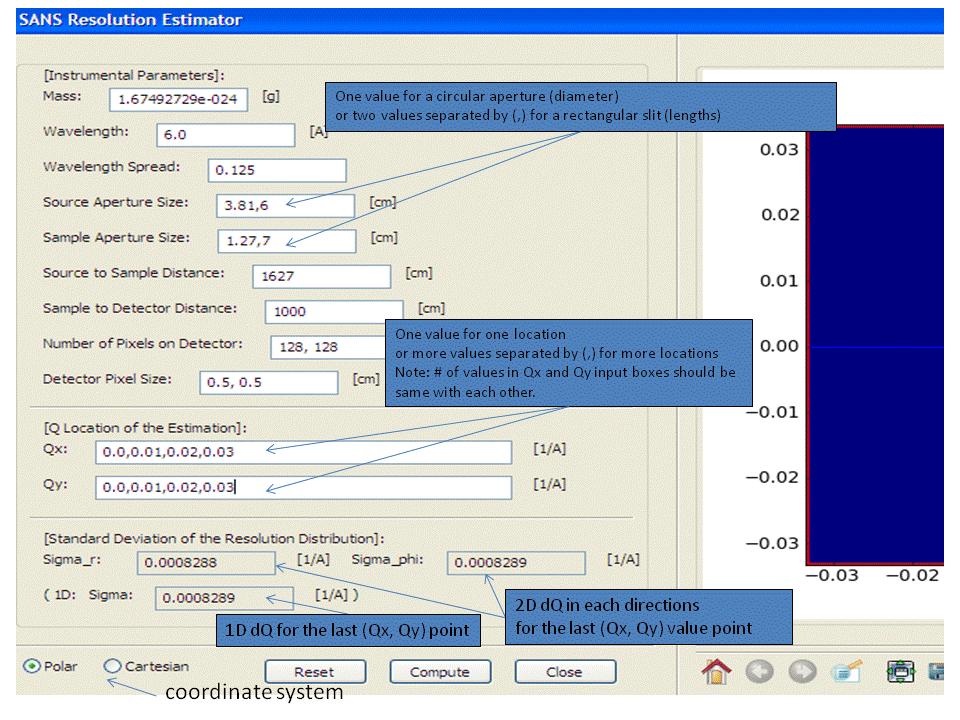

This tool is to approximately estimate the resolution of Q based on the SANS instrumental parameter values assuming that the detector is flat and vertical to the incident beam direction.
1. Change the default values of the instrumental parameters as desired, and type the qx and qy value where the resolution is calculated.
2. Select the coordinate system from the radio button.
3. Click on the compute button.
4. 1D and 2D dQ will be displayed in the text-box at the bottom of the panel. Two dimensional resolution weight distribution (2D elliptical Gaussian function) will also be displayed in the plot panel even if the Q inputs are outside of the detector limit. The red lines indicate the limits of the detector.
